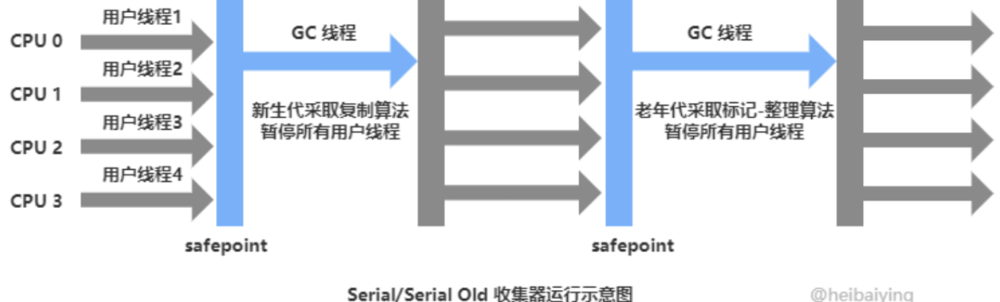
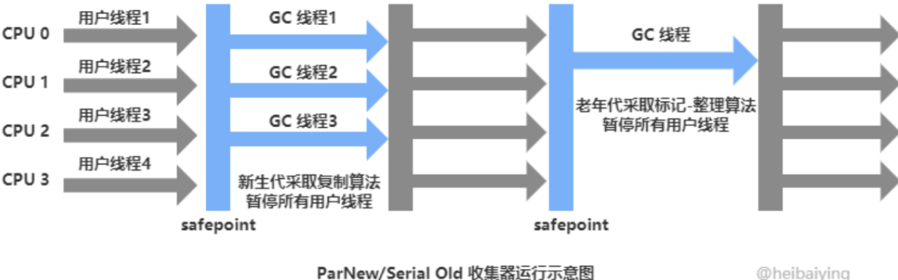
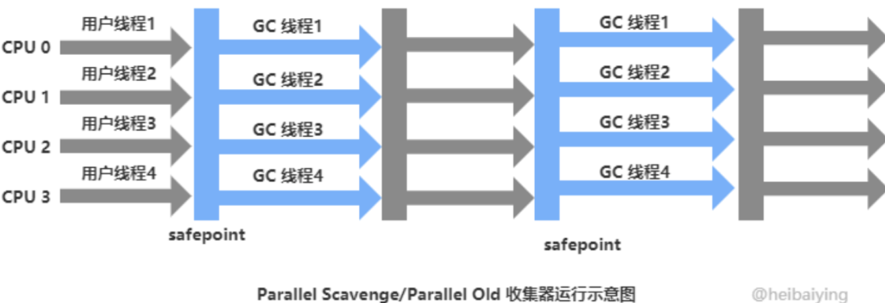
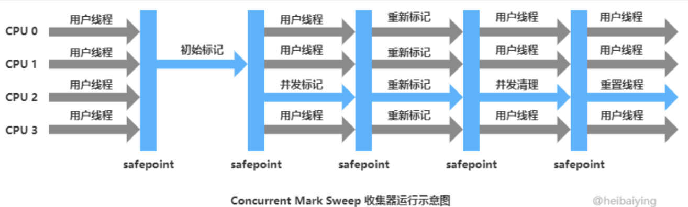
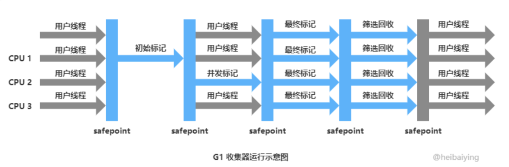
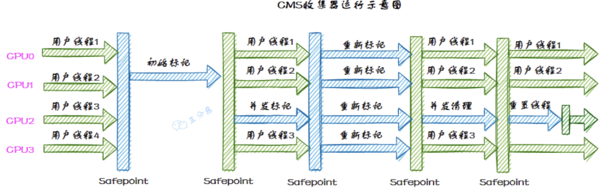
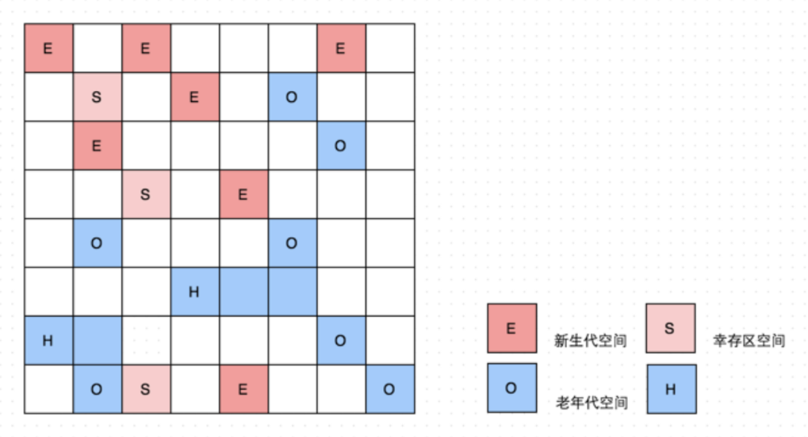

JVM-垃圾回收
垃圾回收机制
发生在哪
垃圾回收主要在Java堆上。在JVM程序计数器、Java虚拟机栈和本地方法栈都是线程私有的，随着线程的结束而销毁，因此不需要考虑垃圾回收问题。
什么是垃圾？怎么判断？
垃圾就是那些不再被程序使用，并且后续无法被访问的对象。判断对象是否是垃圾有两种方法：
- 引用计数法：对象没被引用一次，引用计数器+1；但是存在循环引用的问题，比如对象A引用对象B，同时对象B又引用着对象A
- 可达性分析法：GC Root为起点，遍历查找引用关系，如果某个对象到GC Root间没有任何引用链，那么就代表不可达。三色标记法就是该理论的实现
哪些对象可以作为GC Root？
GC Root是指在JVM中直接或间接被引用的对象，这些对象被视为不可回收的，是垃圾回收的根节点
- 系统类加载器（应用程序类加载器）加载的实例对象
- 当前活跃线程相关的实例对象
- Java虚拟机栈、本地方法栈中引用的对象
- 方法区中常量、类静态属性引用的对象
- 被加锁的对象
三色标记法是什么？
三色标记法是可达性分析算法的实现手段，是一种对象遍历和标记算法，用来在垃圾回收过程中区分存活对象和垃圾对象
将对象分为三类：
- 白色：尚未标记的对象。标记结束后，仍然为白色的对象会被认为是不可达的对象，可以清理
- 灰色：已经标记但还没有标记其引用的对象，需要进一步处理
- 黑色：已经标记并且其所有引用对象都已经标记，完全处理过了
工作流程：
- 初始标记（STW）：从 GC Roots 开始，标记所有根节点直接可达的对象为灰色
- 并发标记（不需要STW）：在此阶段，标记所有灰色对象引用的对象为灰色，然后将灰色对象自身标记为黑色，不断的重复直到没有灰色对象。这个过程是并发的，和应用线程同时进行
- 重新标记（STW）：重新标记阶段的目标是处理并发标记阶段遗漏的引用变化。为了确保所有存活对象都被正确标记，remark 需要在 STW 暂停期间执行
存在漏标和多标问题
漏标问题：
只有当两个条件同时满足时：
- 黑色对象新增到白色对象的引用（条件1）：黑色对象已经完成扫描，不会再次被处理。
- 灰色对象到白色对象的所有路径被切断（条件2）：白色对象不再被任何灰色对象引用，无法通过灰色对象被标记。
一句话概括：并发标记时，用户线程可能会插入了一条或多条从黑色对象到白色对象的新引用，并且去掉了灰色对象到该白色对象的直接引用或者间接引用，那么就会导致该白色对象无法被正确处理。
解决方案：
-
CMS 采用 “增量更新” 解决
-
并发标记过程中，当新插入黑色对象指向白色对象的引用时，把该引用关系记录下来
-
重新标记过程中，根据新增的引用关系，重新进行判断白色对象
-
-
G1 采用 “原始快照” 解决
-
并发标记过程中，当删除灰色对象指向白色对象的直接/间接引用时，把该引用关系记录下来
-
最终标记过程中，根据删除的引用关系，重新进行判断白色对象
-
多标问题：
- 多标：这个对象原先可能是黑色的存活对象，但是用户线程把指向该黑色对象的引用删除了，所以这个黑色对象应该变成白色对象，应该被回收掉。但是三色标记法是无法识别到它的。
- 解决方案：不需要特别解决，在下一次GC中该浮动垃圾就会被回收掉
垃圾回收算法
有三种，分别是标记清除、标记复制、标记整理
- 标记清除，标记存活对象，统一回收所有未标记的对象
- 优点：垃圾回收速度块
- 缺点：内存空间碎片化，导致内存的浪费；执行效率不稳定
- 标记复制，将可用内存分为两块，每次只使用一块，先标记，然后将存活对象从a移动到b，清理a内存区域，对换两个内存区域名称
- 优点：不会产生内存碎片
- 缺点：浪费内存空间，内存空间开销大
- 标记整理，在标记完成后，让所有存活对象都向内存的一端移动，然后直接清理掉边界以外的内存
- 优点：不会产生内存碎片；可以充分利用内存空间
- 缺点：效率低，对象移动比较复杂（可能在移动对象的时候需暂停用户线程）
但是一般不会单独使用一个垃圾回收算法，因为对象的生命周期是不同的，有的产生后很快回收，有的会存活很久，堆分为年轻代和老年代，年轻代一般使用标记复制算法，老年代一般使用标记整理算法
垃圾回收器
有哪些
Serial/Serial Old、ParNew、Parallel Scavenge/Paralled Old、CMS、G1



Paralled 回收器关注于吞吐量（用户代码运行时间\（用户代码运行时间+垃圾回收时间））

CMS针对老年代，是一种以获取最短回收暂停时间（STW）为目标的回收器，主要体现在两个方面，一、基于标记清除算法速度快；二、在CMS垃圾回收过程中，并发标记和并发清除是和用户线程并发执行的

G1是一个全年代的垃圾回收器、可设置每次垃圾回收的STW，G1将堆内存划分为若干个大小相同的区，每个区都会产生垃圾，但在垃圾回收时，可以选择性的回收垃圾较多的区域，垃圾较少的区域暂时不回收，这样效益较高，短时间内回收了尽可能多的垃圾，尽可能达到STW的暂停时间目标
CMS
以获取最短回收暂停时间为目标的垃圾回收器

CMS采用标记清除算法，工作流程大致可以分为四个步骤：
- 初始标记：标记GC Root直接关联到的对象，耗时短但是需要STW（暂停用户线程）
- 并发标记：从初始标记到的对象开始遍历整个对象图，标记所有可达对象，耗时长但是不需要暂停用户线程
- 重新标记：采用增量更新算法，对并发标记过程中因为用户线程运行而导致引用关系变动的对象进行重新标记，耗时比初始标记稍长且需要暂停用户线程；
- 并发清除：并发清除掉已经死亡的对象，耗时长但不需要暂停用户线程
重新标记的增量更新算法是什么意思？
判断对象是否存活采用的是三色标记法，在并发标记过程中可能会存在黑色对象指向白色对象并且灰色对象对该白色对象的引用都切断了，这样就导致了漏标的现象；CMS在并发标记过程中，将黑色对象对白色对象新增的引用会记录下来，在重新标记时会处理这些记录，确保可达对象都正确的标为灰色或者黑色。
重新标记的步骤？
- 处理记录下的引用变化：在并发标记过程中，将黑色对象对白色对象新增的引用会记录下来，在重新标记时会处理这些记录，确保可达对象都正确的标为灰色或者黑色
- 重新遍历灰色对象：再次遍历灰色对象，处理它们的所有引用，确保引用的对象正确标记为灰色或黑色
- 清理：确保所有引用关系正确处理后，灰色对象标记为黑色，白色对象保持不变。这一步完成后，所有存活对象都应当是黑色的
CMS存在的问题？
- 产生内存碎片，使用的标记清除算法，会产生内存碎片，浪费内存空间。可能分配对象时老年代空间足够但是不能分配，触发fullgc
- 存在浮动垃圾，清理的时候是并发清理，用户线程继续执行可能会产生垃圾，这些垃圾就是浮动垃圾，只能下一次垃圾回收的时候清理；如果浮动垃圾过多导致老年代空间不足，触发fullgc
- 触发full GC将退化为Serial Old垃圾回收器，单线程并暂停用户线程，会导致长时间的STW
G1
可以设置每次垃圾回收的暂停时间STW，把堆内存分为多个大小相等的区域（Region），每个区域根据需求扮演新生代的Eden、Survivor区、老年代区域，并且存在存储大对象的区域，当一个对象的大小超过区域的一半时直接存在存放大对象的区域

G1运行过程也分为四个步骤：（Mixed GC）
- 初始标记：标记GC Root直接关联到的对象，耗时短但是需要STW（暂停用户线程）
- 并发标记：从初始标记到的对象开始遍历整个对象图，标记所有可达对象，耗时长但是不需要暂停用户线程；并且采用原始快照的方案，当删除灰色对象和白色对象的引用时，会记录下来；（不需要暂停用户线程）
- 最终标记：因为并发标记和用户线程时并发执行的，过程中可能会导致对象间引用关系的变化，因此需要最终标记遍历原始快照记录，防止漏标（暂停用户线程）
- 筛选清除：G1清除垃圾时不会一次性全部清除，会对每个分区进行回收价值和成本排序，根据用户期望最大暂停时间进行指定回收计划，选择任意多个区域构成回收集，将回收集中 Regin 的存活对象复制到空的 Regin 中，再清理掉整个旧的 Regin 。涉及到存活对象的移动，需要暂停用户线程，并由多个收集线程并行执行
如果选择垃圾回收器？
新生代收集器有 Serial、ParNew、Parallel Scavenge
老年代收集器有 Serial Old、Parallel Old、CMS
整堆收集器有G1、ZGC
-
串行垃圾回收器，如: Serial GC，Serial Old
- 单线程垃圾收集器，适用于单核机器。暂停时间较长，不适用于多核环境和大内存应用。
-
并行垃圾回收器，如: Parallel Scavenge，Parallel Old，ParNew
-
多线程垃圾收集器，适用于多核机器。适合批处理、后台作业等暂停时间不敏感的应用。
-
暂停时间较长，不适合需要低延迟的应用。
-
-
并发标记扫描垃圾回收器 (CMS GarbageCollector)
-
低延迟垃圾收集器，适合需要响应时间较短、高响应性要求的应用。
-
容易产生碎片，可能需要Ful GC进行碎片整理，FulGC时会有较长暂停。
-
G1垃圾回收器 (G1 Garbage Collector，JDK 7中推出，JDK 9中设置为默认)
- 设计用于替代CMS，适合大内存、多核环境。较低的暂停时间，能够预测性地控制暂停时间，适合大数据量应用。
ZGC垃圾回收器 (The Z Garbage Collector，JDK11 推出)、Shenandoah GC (JDK 12 推出)
- 超低延迟垃圾收集器，适用于超大堆内存。暂停时间通常在10ms以下，适合对响应时间有极高要求的应用。
- 目前只支持较新的JDK版本，可能存在一些不成熟的特性。
综上，如何进行选择垃圾回收器
-
根据机器情况判断，如果是单核机器，或者内存较小的机器，则选择 Serial GC
-
根据业务类型判断，看应用更在意的是吞吐量还是 STW 的时长
-
比如批处理任务的应用，更在意的就是吞吐量。
-
比如实时交易系统，更在意的就是 STW 的时长。
-
根据机器分配的堆内存大小进行判断
-
一般来说，我们认为至少达到4G 以上才可以用 G1、ZGC 等
-
通常要比如超过8G、16G 这样效果才更好。
-
根据 JDK 版本进行判断，不同的版本支持的垃圾收集器不一样。
内存分配原则
- 对象优先分配到Eden区
- 大多数情况下，对象在新生代的
Eden区中进行分配，当Eden区没有足够空间时，虚拟机将进行一次 Minor GC
- 大多数情况下，对象在新生代的
- 大对象直接进入老年代
- 如果在新生代分配，因为其需要大量连续的内存空间，可能会导致提前触发垃圾回收；并且由于新生代的垃圾回收本身就很频繁，此时复制大对象也需要额外的性能开销
- 长期存活的对象进入老年代
- 每一次Minor GC对象年龄+1，当年龄达到15时进入老年代、
- 动态年龄判断
- 在 Survivor 空间中相同年龄的所有对象大小的总和大于 Survivor 空间的一半，那么年龄大于或等于该年龄的对象就可以直接进入老年代，而无需等待年龄到达
-XX:MaxTenuringThreshold设置的值
- 在 Survivor 空间中相同年龄的所有对象大小的总和大于 Survivor 空间的一半，那么年龄大于或等于该年龄的对象就可以直接进入老年代，而无需等待年龄到达